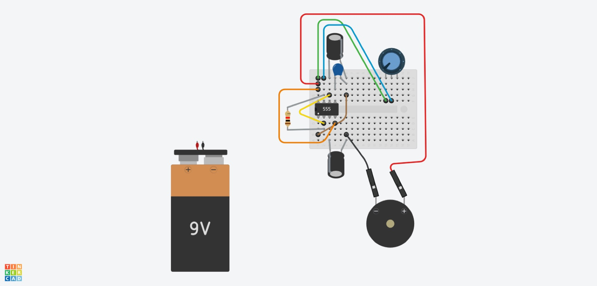
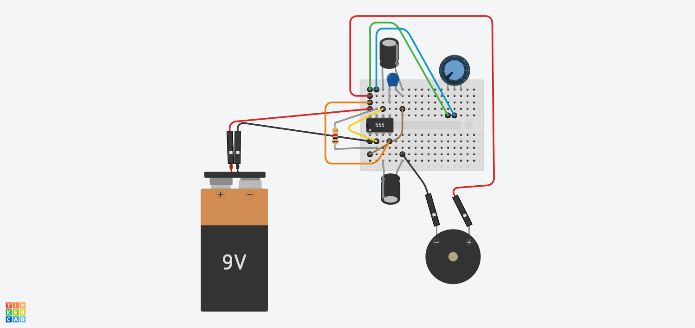
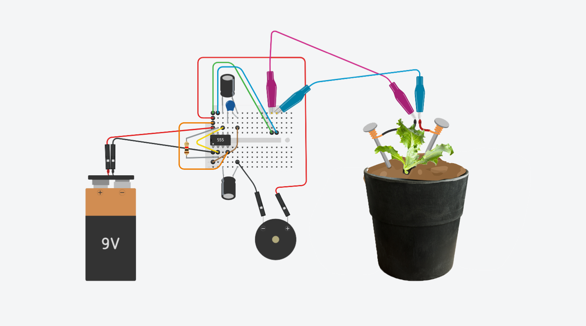
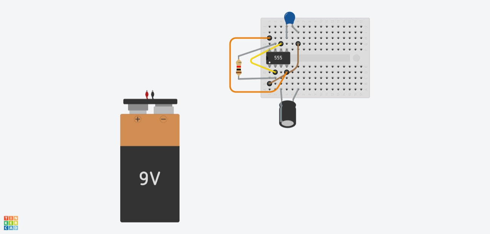
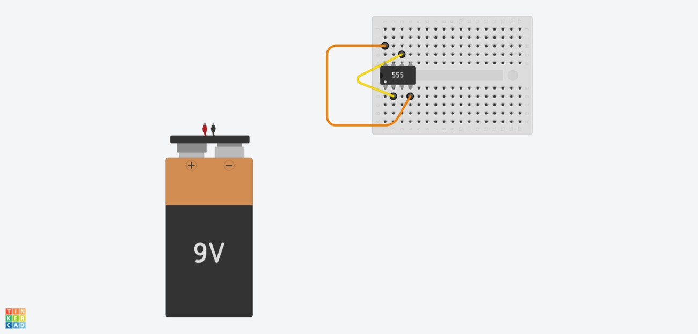
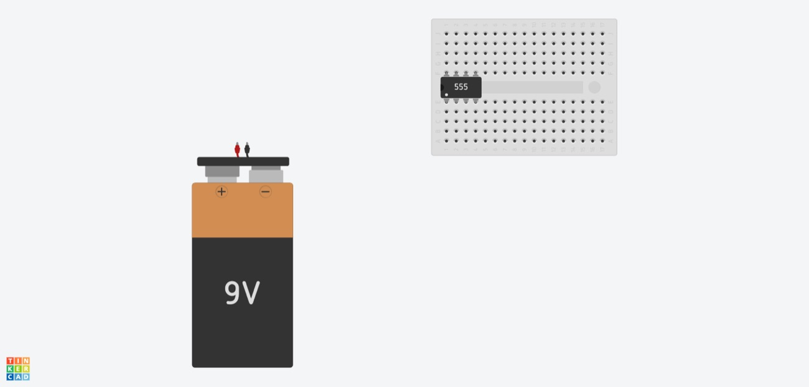

The lettuce that whispers OHMMMMM — a hands-on art + electronics workshop. Participants turn soil and lettuce into circuit components, reading moisture as resistance and turning it first into light, then into sound with a 555 oscillator. Built for children and students, run at Fablab Benfica.

A two-hour exploratory activity blending art and electronics: lettuce leaves and potting soil become natural circuit components, and repurposed packaging becomes a planter. Participants investigate how soil resistance changes with moisture, and build two progressive projects — a moisture-responsive LED, then a 555-based moisture-sensing sound instrument. By André Rocha (ESELx / IPL), CC-BY 4.0.
Dry soil is high-resistance, wet soil low — and that difference drives the circuit.
The workshop is designed as a progression: a first, almost-no-electronics circuit that makes the phenomenon visible, then a richer oscillator that makes it audible — with difficulty adjustable by the educator. The framing is poetic: "how do we use electronics to extract soil's secrets, where roots meet resistance?"
Everything is breadboard-friendly and low-cost. Activity 1 needs almost nothing; Activity 2 adds the 555 oscillator.
| Part | Role | Qty |
|---|---|---|
| LED (5 mm) | Activity 1 — brightness tracks moisture | 1 |
| 220 Ω resistor (¼ W) | Activity 1 — LED current limit | 1 |
| 9 V battery + connector | Activity 1 — supply | 1 |
| Nails / stainless probes (~7–10 cm) | Soil resistance electrodes | 2 |
| Crocodile clip leads | Connections | 4 |
| Planter + potting soil + seedling | The living sensor (lettuce / bean / tomato) | 1 |
| NE555P timer (DIP-8) | Activity 2 — square-wave oscillator | 1 |
| 10 µF electrolytic caps (16 V+) | Activity 2 — timing / output coupling | 2 |
| 100 nF ceramic cap (50 V) | Activity 2 — control-pin bypass (pin 5) | 1 |
| 1 kΩ resistor | Activity 2 — timing (pins 2–7) | 1 |
| 100 kΩ linear potentiometer | Activity 2 — pitch (replaced by soil probes) | 1 |
| 8 Ω speaker | Activity 2 — the sound | 1 |
| Mini breadboard (~170 pts) + jumpers | Activity 2 — build surface | 1 |


No firmware — the "software" is the circuit design: schematics and BOMs are versioned in the repo, and the oscillator can be explored interactively in TinkerCAD before building.
Activity 1 — see the moisture
1 · Plant a lettuce / bean / tomato seedling in prepared soil. 2 · Wire the simple circuit — 9 V → 220 Ω → LED → probe, probe → back to battery. 3 · Test the response: dry soil (dim / off) vs. watered soil (bright). 4 · Push the probes into the pot and watch the LED track hydration.
Activity 2 — hear the moisture
1 · Seat the NE555 on the breadboard (watch orientation) and connect the battery safely. 2 · Tie pins 2–6 together, pin 4 to pin 8, and a 1 kΩ between pins 2–7. 3 · Add the caps with correct polarity — 10 µF at pin 3 (output), 100 nF at pin 5, 10 µF at pin 6. 4 · Wire the 100 kΩ pot across VCC–GND with the wiper to pin 7; connect the 8 Ω speaker (– to the output cap, + to VCC). 5 · Test the tone with the pot, then replace the pot with the soil probes — now the soil sets the pitch.



Full write-up on the Fablab Benfica documentation hub; materials, diagrams and BOMs in the GROUU repository.
Author: André Rocha (ESELx / IPL) · License: CC-BY 4.0 · Host: Fablab Benfica.